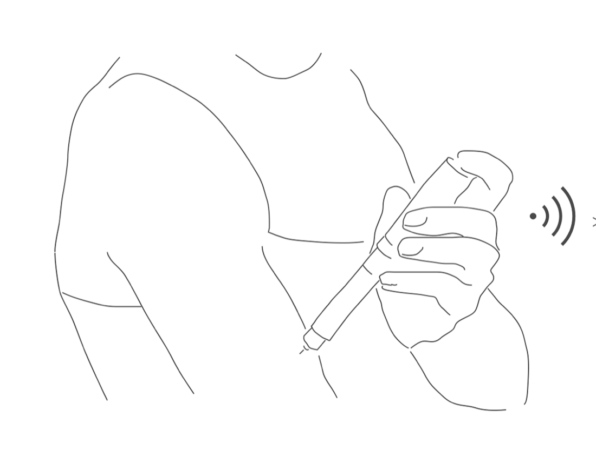
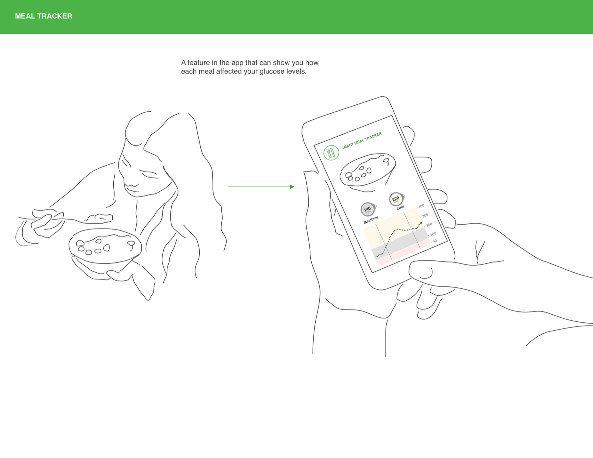
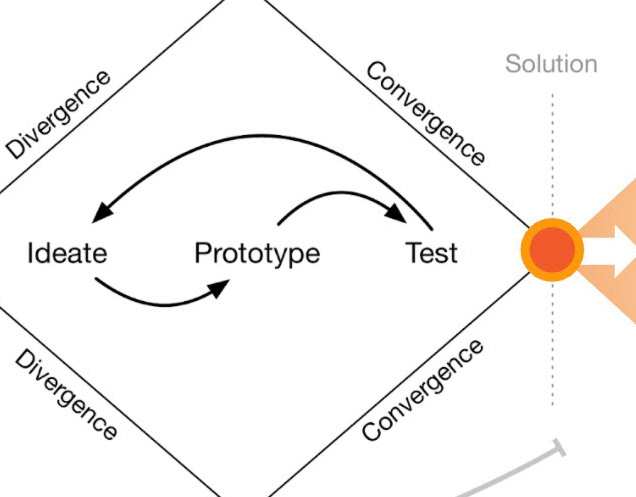
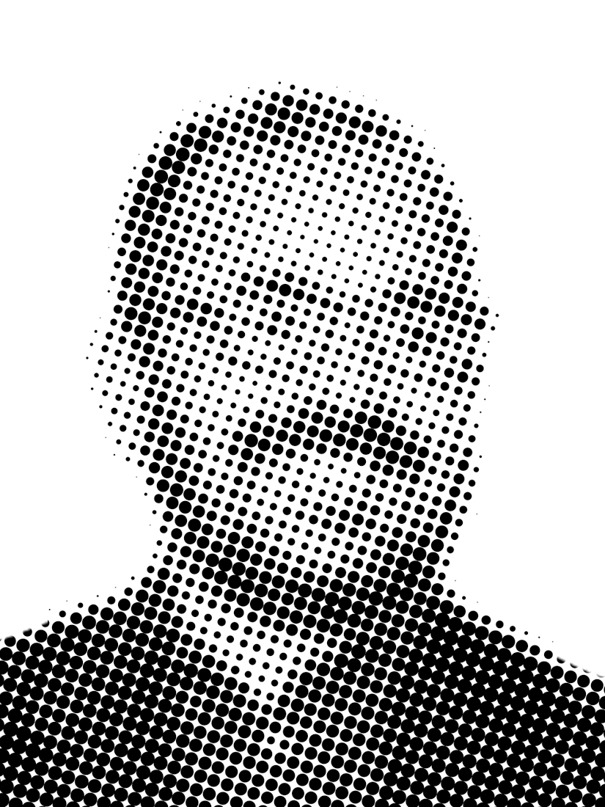

Back to craft
Style guide
Every UI element on poncedesign.com on one page. Nothing here is a picture: each specimen is live markup styled by the same two stylesheets the rest of the site loads, so if a token changes, this page changes with it.
Accessibility
Report card
WCAG 2.2 AA, measured live in your browser from the site's own tokens and this page's markup.
16/16checks pass
Accessibility
Report card
WCAG 2.2 AA, measured live in your browser from the site's own tokens and this page's markup.
Colour contrast
- AaInk on whiteHeadlines, titles19.28:1Pass
- AaInk 2 on whiteBody copy, leads11.32:1Pass
- AaInk 3 on whiteNav, filter tabs, labels, captions, footer5.30:1Pass
- AaInk 3 on tintFigure captions, tags4.81:1Pass
- AaOrange deep on whiteSmall orange labels, counts, hover states4.78:1Pass
- AaDanger on danger softForm errors5.71:1Pass
- AaPositive on whiteUpward trends5.32:1Pass
- AaMuted on whiteChevrons and the wordmark onlyNo longer used for text. Small labels moved to --ink-3.3.43:1Pass
- AaOrange on whiteContact headline, menu hover: large type onlyLarge text needs 3:1. Small labels moved to --orange-deep.3.37:1Pass
- AaFocus ring on whiteKeyboard focus outlineNon text contrast needs 3:1.3.37:1Pass
This page
- PassPage language is declared
- PassSkip link reaches the main content
- PassEvery image has alt text or is marked decorative
- PassEvery link and button has an accessible name
- PassEvery form field has a label
- PassOne h1, and headings never skip a level
Built in across the site: visible focus rings, prefers-reduced-motion support, aria-pressed filters with a live result count, an Escape to close menu, a native dialog for contact, and every page readable without JavaScript.
01 Foundations
Colour, type, space & motion
Surface & ink
A white page and a cool grayscale ramp. Lines separate, they never decorate.
Background
Tint
Ink
Ink 2
Ink 3
Muted
Line
Line strong
Accent & state
Orange is the only colour. Small orange text uses Orange deep to meet 4.5:1; bright Orange is kept for focus rings, fills and large type. Muted is for non text marks only.
Orange
Orange deep
Orange soft
Yellow
Yellow soft
Positive
Danger
Danger soft
Typeface
Helvetica Neue through the system stack. One family, weights 300 to 700. Labels are tracked capitals of the same face, not a mono.
Aa Bb Cc 0123
Type scale
Fluid sizes clamp between phone and desktop. Headlines run tight; body copy runs at 17px on a 1.65 line.
Display
Section headline
Block heading
Lead paragraph. Most designers hand off a file. I hand off something that already runs.
Body copy. I've written front end code for as long as I've designed interfaces, and it changes what I hand engineering. Bold lifts to full ink.
Eyebrow label
14 projects · 2006 to 2026
Grid
Twelve columns inside a 1320px wrapper with a fluid gutter. Cards take 4, 6 or 12.
Spacing
Sections separate by space alone, no rules between them. Corners are square and nothing casts a shadow.
Motion
Three curves and three durations. Hover a card to run it. Everything stops under prefers-reduced-motion.
Ease
Ease out
Ease in out
Durations
02 Controls
Buttons, links & navigation
Buttons
Tabs, not pills: tracked capitals on a 1px rule. Primary for the one action that matters, ghost for the alternative, quiet for a tertiary exit.
Text links
Breadcrumbs lead out of a page, link outs leave the site, and the mail link is the one oversized link on the home page.
Header
Mark, primary nav and one action. Under 860px the nav folds into a burger that opens a full screen drawer. The live header on this page condenses, hides on the way down and returns on the way up.
PonceDesign
Let's talk
Filter tabs
A row of toggles with aria-pressed. The active tab takes an orange rule and its count stays orange.
Tags
Capability tags sit on a tint with a hairline; card tags drop the container entirely.
Focus
Every interactive element gets a visible 2.5px orange ring on keyboard focus. Tab through this page to see it.
03 Components
Cards, data & content blocks
Project card
Framed thumbnail, client label, title and two lines of summary. On hover the title takes a 1px underline; the image stays still.
2018
Capability block
A heading, a tag row and short prose. Two sit side by side in the craft section and stack under 900px.
Front end
Handwritten HTML, CSS and JavaScript. This page is the example: no framework, no build step beyond a small generator.
Stats
Heavy numerals over tracked labels, ruled top and bottom.
- 20+Years in product
- 14Case studies
- 6Companies
- 1MFA in video
Facts row
The case study header: four labelled facts on the same grid as the lead.
Client
Seismic
Year
2026
Role
Principal designer
Focus
AI, Mobile
KPIs
Outcome numbers in a hairline grid. Only figures from source material, never invented.
+25%Weekly active sellers
3×Content shared from mobile
4.6App store rating
−40%Support tickets
Scoreboard
A grouped metric panel for case studies with several related numbers. The lead row is larger and orange.
Engagement after launch
First 90 days+25%Weekly active sellers
2.1×Sessions per seller
Adoption
68%Used AI search↑ 12 pts
41%Returned in week two
9sMedian time to answer
Specimen values.
Credentials
A label column and a two line entry, used in About and on the résumé.
MFAVideoSavannah College of Art and Design · Savannah, GA
Based inPortland, OregonWorking with teams anywhere
Prose blocks
The case study vocabulary: heading, paragraph, bullets, pull quote and editor's note, all on a 74ch measure.
The problem
People managing diabetes make dozens of small decisions a day. The app had to support each one without becoming another thing to manage.
- Glanceable. The current reading in under a second.
- Calm. Alerts that escalate only when they need to.
When the thing in front of a stakeholder is running rather than rendered, the feedback starts being about the product.
Figure
A framed image with a caption bar. Wide figures break out to the full page and open in a lightbox.

Disclosure
Native <details> with a two border chevron. The title turns orange on hover; the body eases in on open.
Certifications
Recent coursework, mostly in AI assisted design and development.
Ten principles for good design
Dieter Rams
- 01Good design is innovative
- 02Good design makes a product useful
- 03Good design is aesthetic
Pager
Previous and next at the foot of every case study.
04 Animation
Motion that explains
Principles
Motion carries meaning or it doesn't ship. Every demo below runs the site's own code; press Replay to run it again.
- Arrive, don't perform. Things ease out and settle; nothing bounces or loops for attention.
- Content is never held hostage. Hidden states only apply once
html.jsis set, and every reveal has a one second fallback. - Reduced motion wins. Under
prefers-reduced-motionevery transition collapses to an instant and decorative canvases draw one still frame. - Off screen, off. Canvases and loops stop ticking when they leave the viewport or the tab is hidden.
Headline split
The hero headline breaks into characters that rise in on a 28ms stagger. Words stay whole so lines never break mid word.
Then I build it.
Rotating word
The discipline line swaps every 2.6s: the old word exits up, the new one rises from below. The box is locked to the widest word so nothing reflows.
Depth in UX Strategy Motion Graphics Rich Media Design Systems Product Design
Scroll reveal
Elements fade up as they enter the viewport. Four variants, staggered by data-rv-delay so groups arrive in reading order.
Rise
Fade
Slide
Scale
Count up
Stat figures count from zero once they're half on screen, on a cubic ease out. The suffix lands with the final number.
- 20+Years in product
- 14Case studies
- 6Companies
- 12Client logos
Hover feedback
Hover is a colour change or a line drawing in, never movement of the layout. Hover each one.
Thumbnail parallax
Card images drift a few pixels against the frame as you scroll, driven per frame rather than by a transition. Scroll past this card to see it.

Drifting lines
The craft panel: twenty strips on independent slow waves, so nothing moves in step. Hover to speed up and swell the strips under the cursor.
Dot portrait
The About headshot is drawn from the same dot field as the home page intro. It spirals in as it scrolls up, then stops on the settled frame. Click it to gather again.

Mobile drawer
Under 860px the menu opens as a circle growing from the burger, and its links rise in one by one 60ms apart.
WorkCraftAboutContact
Page transition
Leaving for another page on the site, an orange curtain rises from the bottom; the next page uncovers top down. The uncover is pure CSS, so it always clears even if a script fails.
Scroll progress & header
The orange bar at the very top of this page tracks how far you've read. The header condenses past 24px, hides when you scroll down past 420px and returns as soon as you scroll up.
05 Forms
Fields & feedback
Text fields
From the contact dialog. Tinted at rest, white with an orange ring on focus, red with a message when invalid. 16px input text so iOS never zooms.
Please add a short message.
Form feedback
A request level error above the fields, and the action row with its privacy note.
Something went wrong sending that. Try again, or email me directly.
Your details are only used to reply. Email instead
Footer
Tracked caps on a hairline. The real one closes this page.
© 2026 Luis Ponce de Leónluisponcedesign@gmail.comBack to top ↑